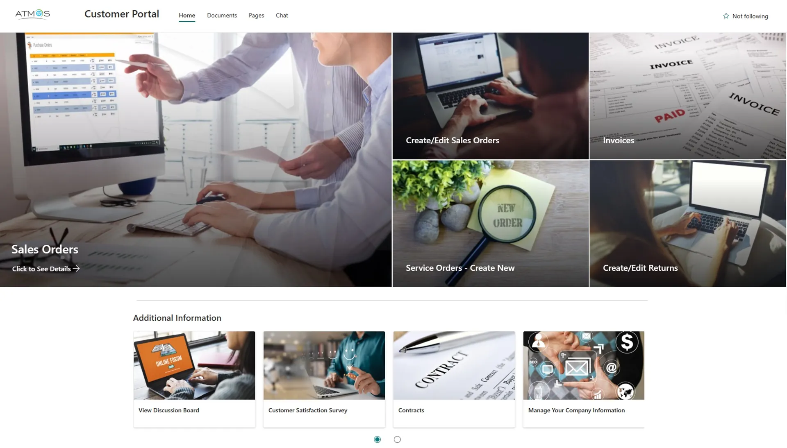
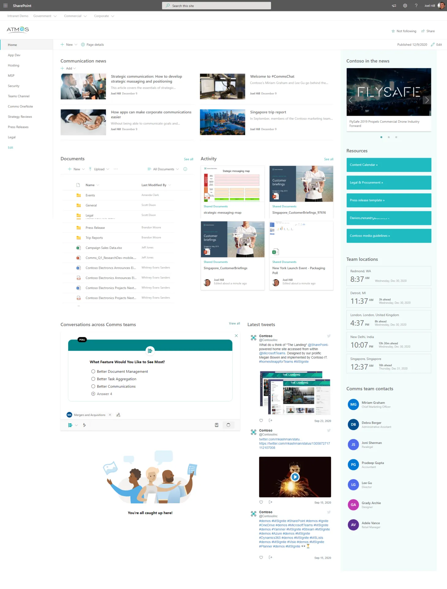

Implementing SharePoint & M365 for Industrial Air Conditioning Company
Atmos, a part of Kabu Projects, is a fast growing industrial solution provider. As the company grew, they identified a number of inefficiencies that stemmed from using many disparate internal tools and manual processes. Employees were struggling to adequately manage essential functions of the business such as tracking sales orders, accessing invoices, monitoring service orders, processing product returns, and managing documents and contracts. Organizational knowledge suffered through scattered systems, and employees often relied on email or informal, offline requests to manage processes, resulting in delayed information, duplicated efforts and limited transparency.


Solution
In order to overcome these problems, we worked with Atmos to design a centralized intranet portal to fulfill their operational needs. This single platform showcased business functions and ensured employees had role based access to information and services such as real-time tracking of their sales orders, access to invoice information, dashboards tracking service orders and return processes. The portal included a searchable contracts repository, discussion boards for departments and teams, and secure file management capabilities. The portal also provided seamless connectivity to Atmos’ existing ERP and CRM systems to ensure the flow and consistency of real-time data. We also built in user-specific roles and permissions that reflected their department structures and confidentiality classifications.
Results
The results of the intranet portal were immediate and measurable. Employees that were unable to spend over 10 minutes locating the service order details could quickly access the information they needed in under a minute. Monthly internal requests for invoice copies declined more than 90%, and requests to the operations and HR teams regarding documents disappeared completely. The overall satisfaction score for internal systems increased from 62% to 91% in the first quarter of implementation. Employees found the portal easy to navigate and appreciated the transparency and many self-service capabilities it provided.
As the Head of Operations at Atmos put it: “the intranet portal completely changed how we do things internally; it’s a one-stop shop that adds visibility, speed and structure to our core functions.“
Conclusion
This intranet portal project is a perfect example of how impactful digital solutions can influence operational efficiency when appropriately designed, particularly in fast-growing organizations. For Atmos, the portal was not just a communication tool; it was the beginning of a connected, transparent, agile workplace. By centralizing key processes on a single accessible platform, Atmos was able to equip employees with tools, reduce friction in day-to-day work, and lay a foundation for scalable growth.